A 2-Player 5e Campaign
A tabletop adventure for one DM and one player, set on the beautiful Azure Coast. Also playable as a video game.
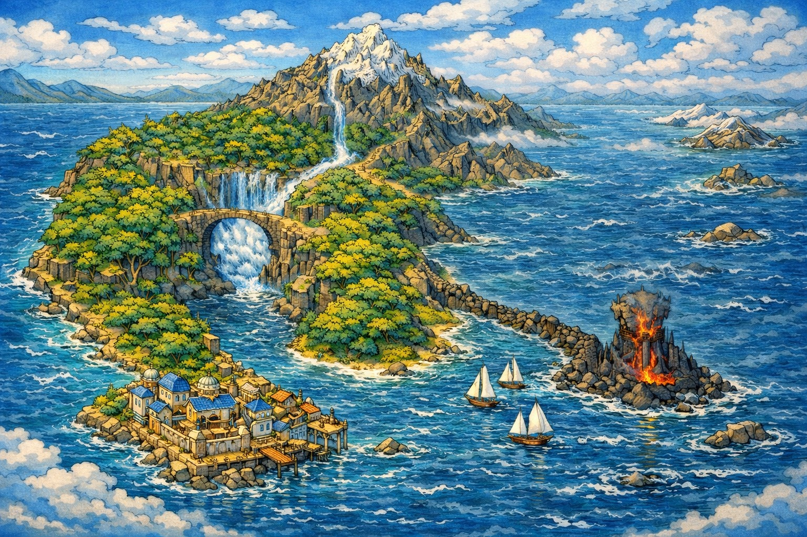
Tabletop Campaign
One player serves as DM and narrates Augustus, a paladin of Torm, while the other plays Elara, a druid of the Circle of the Land. Compatible with 5e rules, with nine locations, full stat blocks, and handout art included.
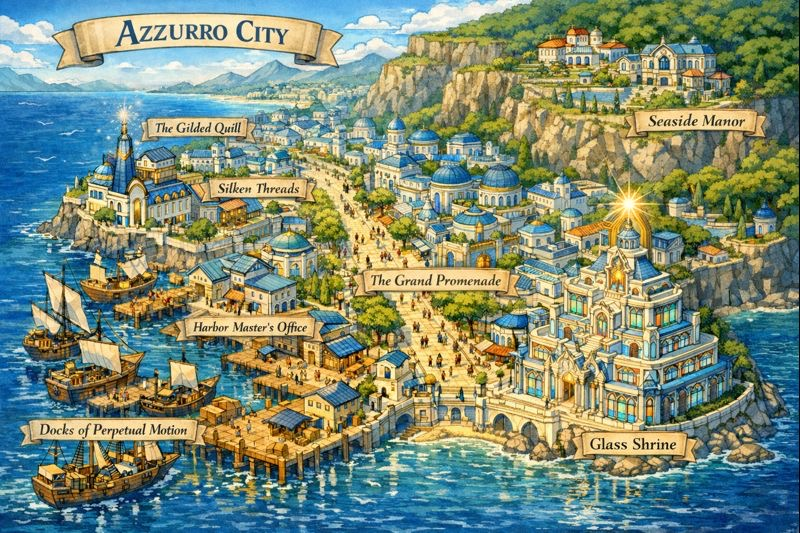
The Setting
From the gleaming marble walls of Azzurro City to the Glass Shrine and the dark Obsidian Tower, every location comes with its own plot and handout art.
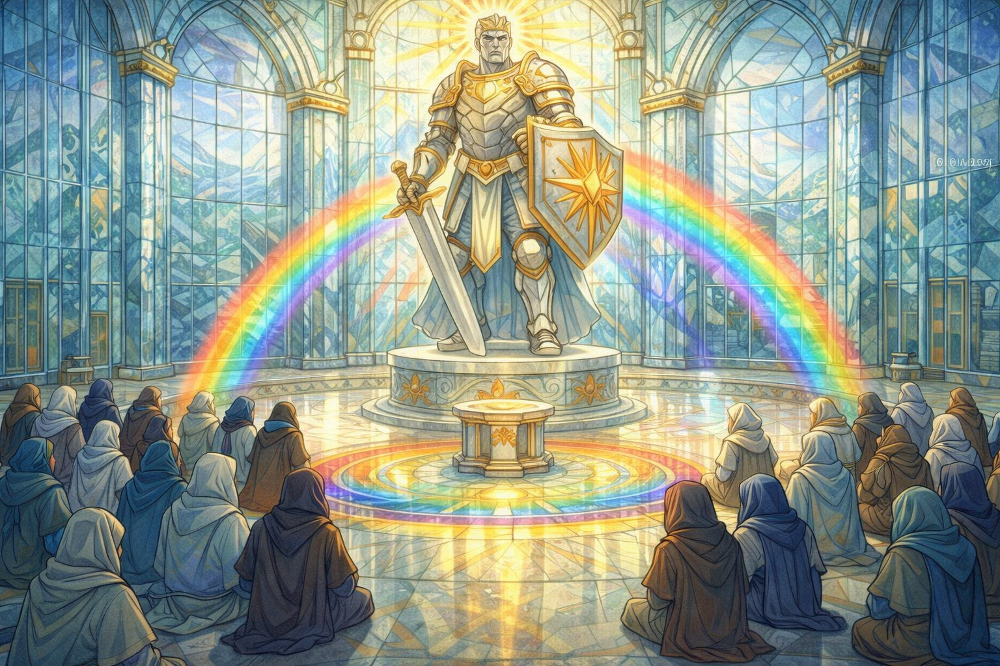
The Azure Coast, home of the campaign
Azzurro City, the gleaming white harbor town
The Glass Shrine
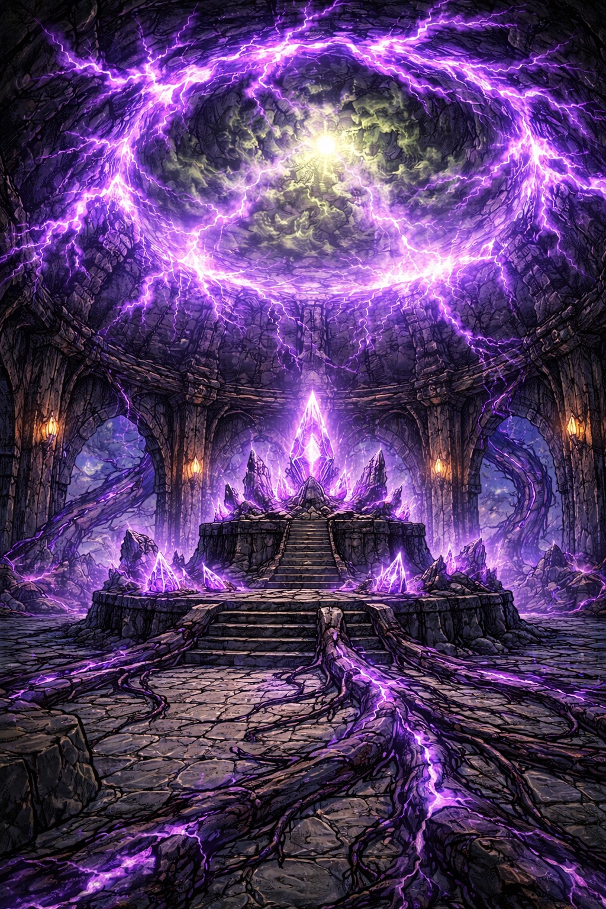
The Obsidian Tower looms over the coast
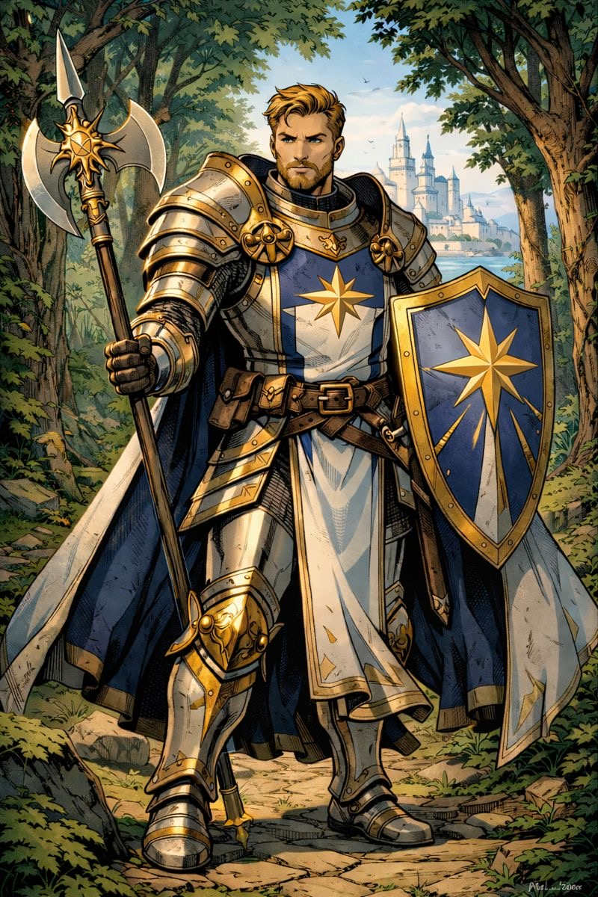
Augustus, paladin of Torm
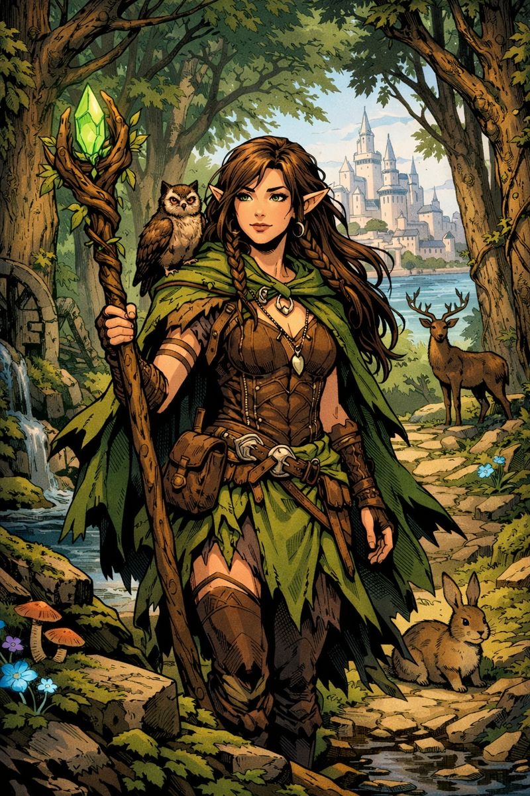
Elara, druid of the Circle of the Land
Video Game
Remembrance Lost is also available as a tactical dungeon crawler. Explore the Azure Coast on a 3D map, fight turn-based 5e combat, and talk your way through branching dialog.
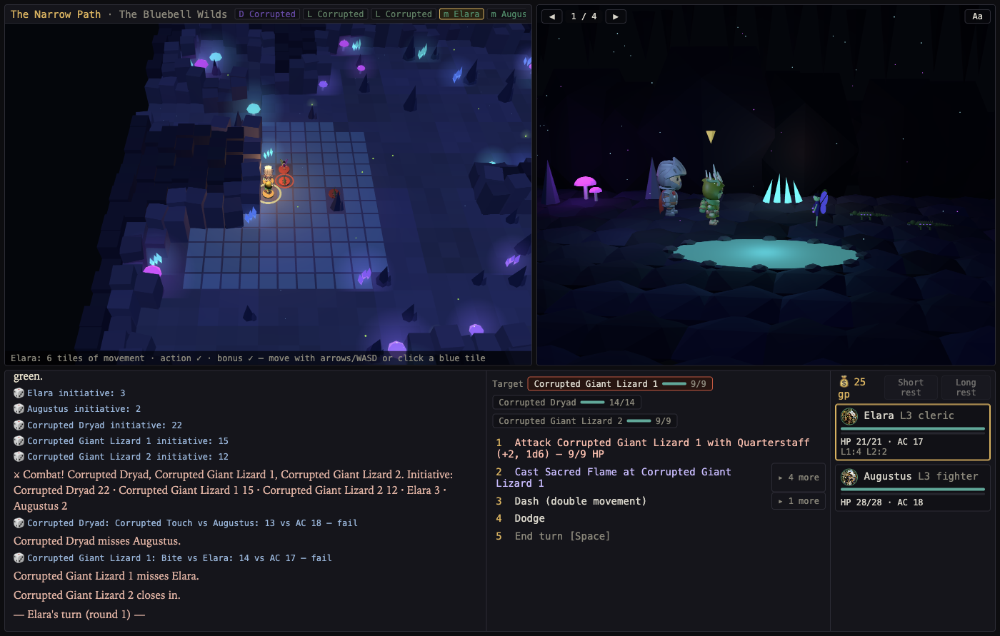
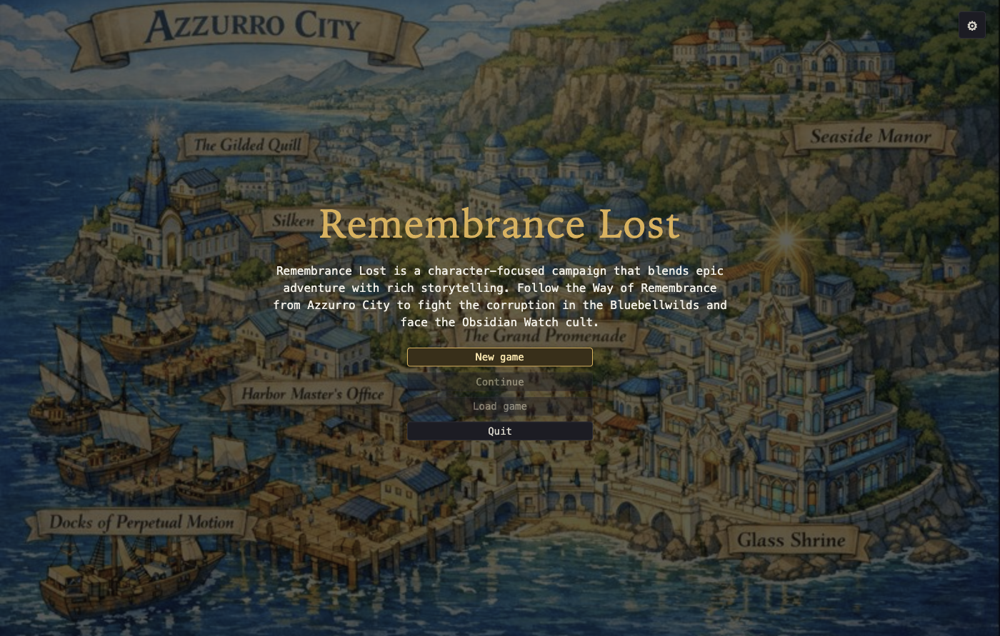
The title screen
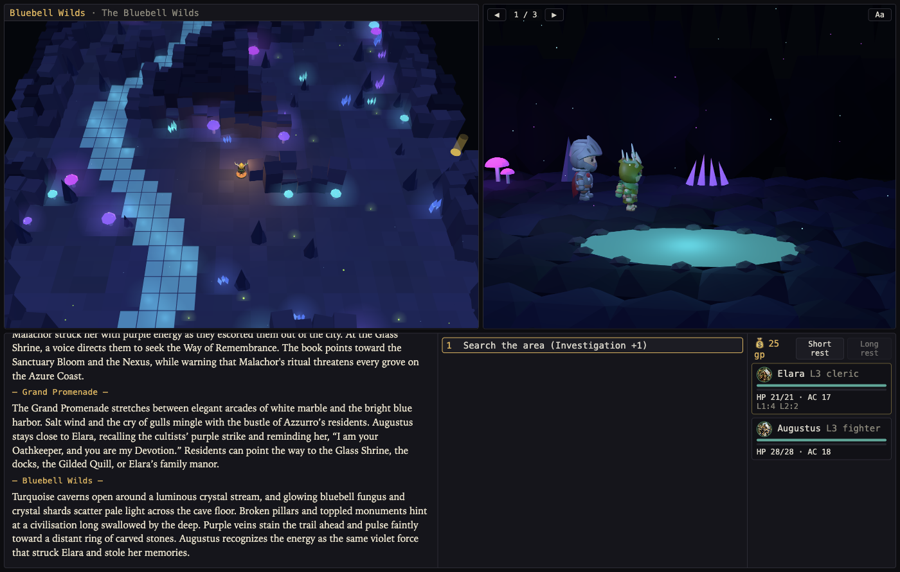
Explore the glowing Bluebell Wilds caverns
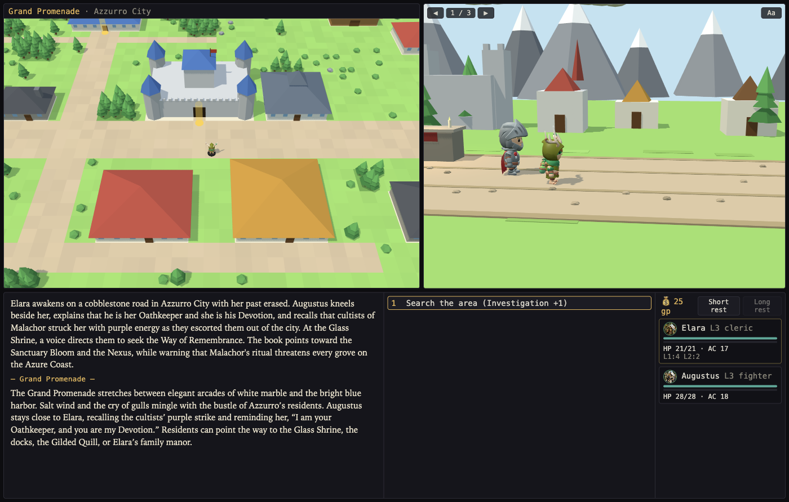
Castles, docks, caves and more
Tactical turn-based 5e combat
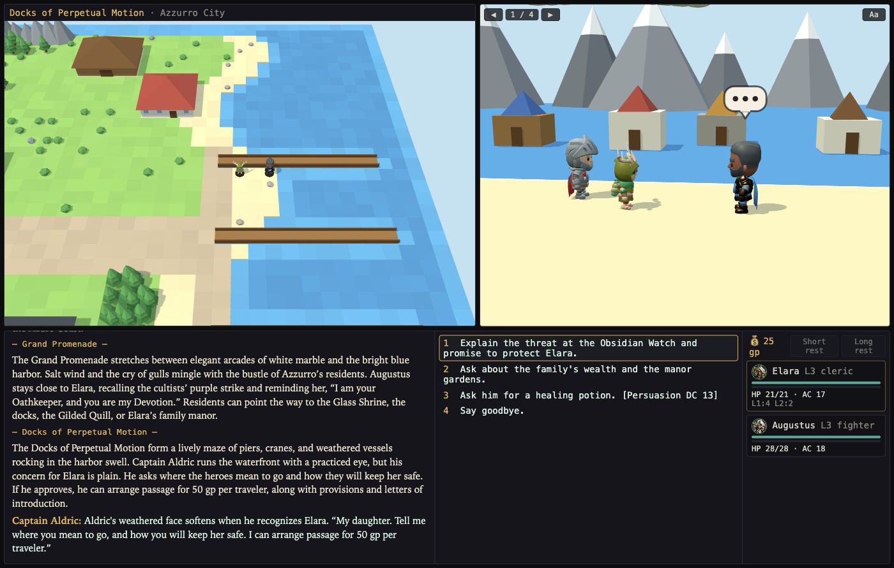
Branching dialog with skill checks
Run it at your table or play it on your computer.